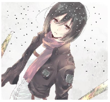
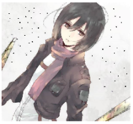
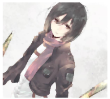
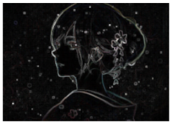
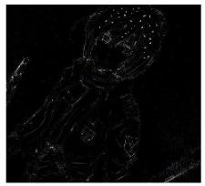
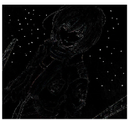

#导入工具包
from imutils import * Erosion腐蚀
其原理是在原图的小区域内取局部最小值,其函数是cv2.erode()。这个核也叫结构元素，因为形态学操作其实也是应用卷积来实现的,结构元素可以是矩形/椭圆/十字形，可以用cv2.getStructuringElement()来生成不同形状的结构元素，比如：
# 矩形 kernel1 = cv2.getStructuringElement(cv2.MORPH_RECT, (5,5)) print(kernel1)
[[1 1 1 1 1]
[1 1 1 1 1]
[1 1 1 1 1]
[1 1 1 1 1]
[1 1 1 1 1]]# 椭圆
kernel2 = cv2.getStructuringElement(cv2.MORPH_ELLIPSE, (5,5))
print(kernel2)[[0 0 1 0 0]
[1 1 1 1 1]
[1 1 1 1 1]
[1 1 1 1 1]
[0 0 1 0 0]]# 十字形
kernel3 = cv2.getStructuringElement(cv2.MORPH_CROSS, (5,5))
print(kernel3)image = imread('image.jpg')
show(image)1 erosion = cv2.erode(image, kernel1)
2 show(erosion)1 for i in range(3):
2 erosion = cv2.erode(image, kernel1, iterations=i+1)
3 show(erosion)Dilation膨胀
膨胀与腐蚀相反，取的是局部最大值。cv2.dilate()
1 dilation = cv2.dilate(image, kernel)
2 show(dilation)1 for i in range(3):
2 dilation = cv2.dilate(image, kernel1, iterations=i+1)
3 show(dilation)Opening开运算
先腐蚀后膨胀叫开运算，其作用是消除小白点。这类形态学操作用cv2.morphologyEx()函数实现
#读入图片
1 image2 = imread('image2.jpg')
2 show(image2)
1 # 去除白点
2 opening = cv2.morphologyEx(image2, cv2.MORPH_OPEN, kernel1)
3 show(opening)
Closing闭运算
闭运算则相反：先膨胀后腐蚀。其作用是消除小黑点。
1 # 去除黑点
2 closing = cv2.morphologyEx(image2, cv2.MORPH_CLOSE, kernel1)
3 show(closing)# 先开运算再闭运算
1 opening = cv2.morphologyEx(image2, cv2.MORPH_OPEN, kernel1)
2 closing = cv2.morphologyEx(opening, cv2.MORPH_CLOSE, kernel1)
3 show(closing)
Gradient形态学梯度
膨胀图减去腐蚀图，dilation - erosion，得到物体的轮廓
gradient = cv2.morphologyEx(image, cv2.MORPH_GRADIENT, kernel1)
show(gradient)
Top Hat顶帽/White Hat白帽
原图减去开运算后的图：src - opening
1 tophat = cv2.morphologyEx(image2, cv2.MORPH_TOPHAT, kernel1)
2 show(tophat)
Black Hat黑帽
闭运算后的图减去原图：closing - src
1 blackhat = cv2.morphologyEx(image2, cv2.MORPH_BLACKHAT, kernel1)
2 show(blackhat)